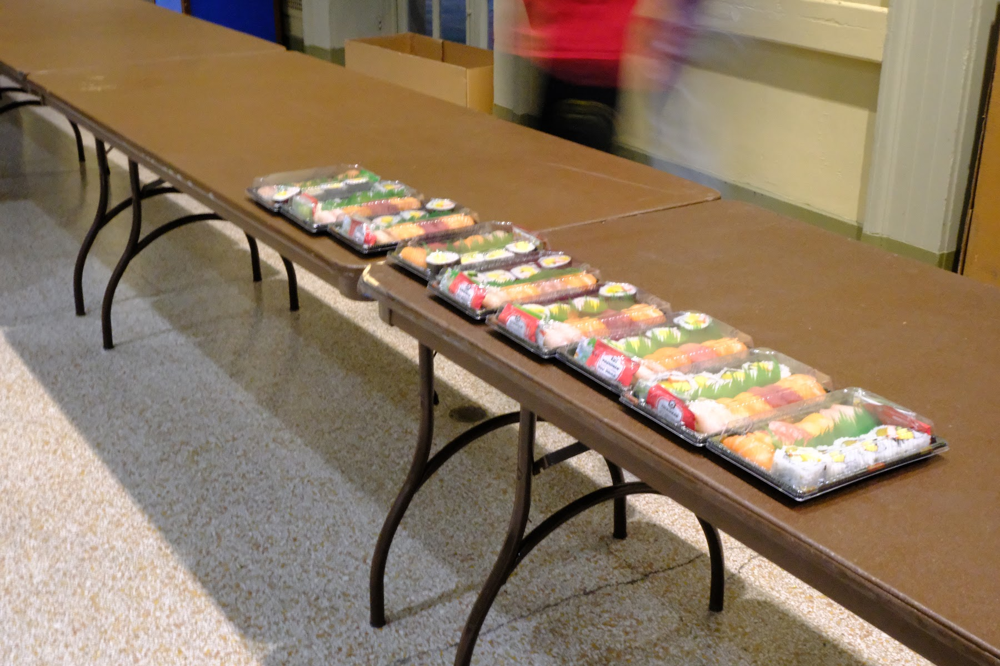
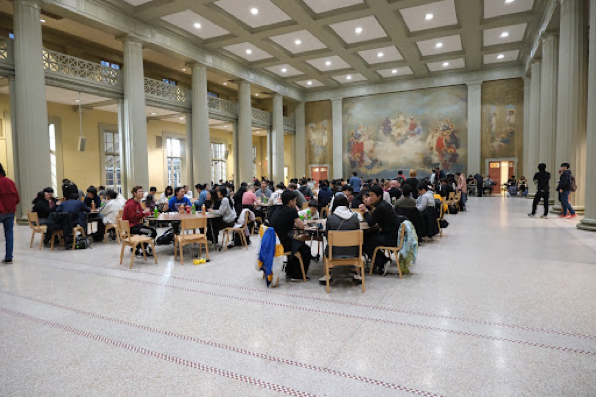
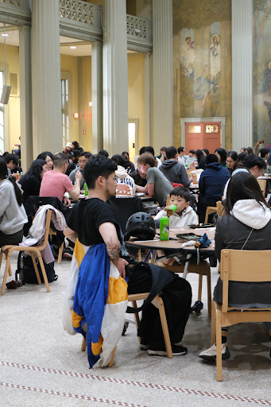
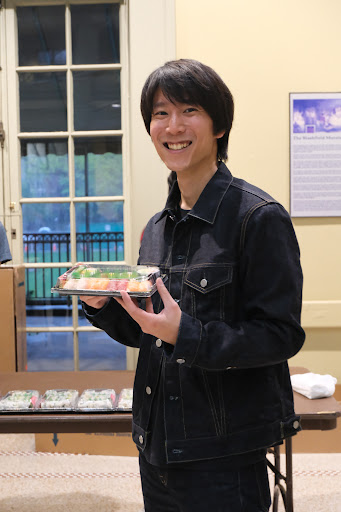
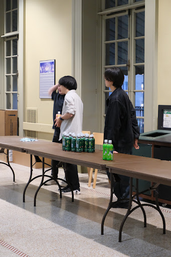

Hanami Festival 2026
Walker Memorial

Connecting Japan and MIT.
JAM introduces and promotes Japanese culture, fosters social connections and cultural exchange, and supports academic outreach rooted in Japanese perspectives.
See what is onJAM is a student organization for MIT students, with a wider community of graduate students, postdocs, faculty, visiting researchers, families, alumni, and friends.
Meet the officers →JAM Officers 2025-2026. Images are drawn from the current JAM members page.
Source page →
President

Vice President

Treasurer


Culture at JAM also happens between the large events: weekly sport, campus tours, and student welcome.

Recurring programs that can grow year by year, from Hanami to lecture-style events such as Beneath the Great Wave.

About 30 members play street basketball most weekends, join MIT intramural play, and face Boston Japan Basketball Club several times a year.

JAM helps support campus visits for Japanese high school students and other groups interested in seeing MIT from the inside.